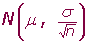
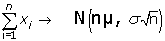
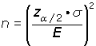
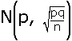
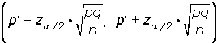
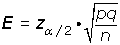
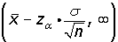
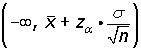
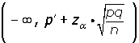

Inferencia estadística
Inferencia estadística
Estudia como sacar conclusiones generales para toda la población a partir del estudio de una muestra, y el grado de fiabilidad o significación de los resultados obtenidos.
Muestreo probabilístico
Consiste en elegir una muestra de una población al azar. Podemos distinguir varios tipos de muestreo:
Muestreo aleatorio simple
Para obtener una muestra, se numeran los elementos de la población y se seleccionan al azar los n elementos que contiene la muestra.
Muestreo aleatorio sistemático
Se elige un individuo al azar y a partir de él, a intervalos constantes, se eligen los demás hasta completar la muestra.
Muestreo aleatorio estratificado
Se divide la población en clases o estratos y se escoge, aleatoriamente, un número de individuos de cada estrato proporcional al número de componentes de cada estrato.
Intervalos característicos
El nivel de confianza (p) se designa mediante 1 - α.
El nivel de significación se designa mediante α.
El valor crítico (k) como z α/2 .
P(Z>z α/2) = α/2 P[-z α/2 < z < z α/2] = 1- α
En una distribución N(μ, σ ) el intervalo característico correspondiente a una probabilidad p = 1 - α es:
(μ - z α/2 · σ , μ + z α/2 · σ )
| 1 - α | α/2 | z α/2 | Intervalos característicos |
|---|---|---|---|
| 0.90 | 0.05 | 1.645 | (μ - 1.645 · σ , μ + 1.645 · σ) |
| 0.95 | 0.025 | 1.96 | (μ - 1.96 · σ , μ + 1.96 · σ ) |
| 0.99 | 0.005 | 2.575 | (μ - 2.575 · σ , μ + 2.575 · σ ) |
Distribución de las medias muestrales
Teorema central del límite
Si una población tiene media μ y desviación típica σ , y tomamos muestras de tamaño n (n>30, ó cualquier tamaño si la población es "normal"), las medias de estas muestras siguen aproximadamente la distribución:

Consecuencias:
1.Permite averiguar la probabilidad de que la media de una muestra concreta esté en un cierto intervalo.
2.Permite calcular la probabilidad de que la suma de los elementos de una muestra esté, a priori, en un cierto intervalo.

3.Inferir la media de la población a partir de una muestra.
Estimación
Intervalo de confianza
Se llama así a un intervalo en el que sabemos que está un parámetro, con un nivel de confianza específico.
Nivel de confianza
Probabilidad de que el parámetro a estimar se encuentre en el intervalo de confianza.
Error de estimación admisible
Que estará relacionado con el radio del intervalo de confianza.
Estimación de la media de una población
Intervalo de confianza para la media
El intervalo de confianza, para la media de una población, con un nivel de confianza de 1- α , siendo x la media de una muestra de tamaño n y σ la desviación típica de la población, es:

El error máximo de estimación es:

Tamaño de la muestra

Estimación de una proporción
Si en una población, una determinada característica se presenta en una proporción p, la proporción p' , de individuos con dicha característica en las muestras de tamaño n, se distribuirán según:

Intervalo de confianza para una proporción

El error máximo de estimación es:

Hipótesis estadísticas
Un test estadístico es un procedimiento para, a partir de una muestra aleatoria y significativa, extraer conclusiones que permitan aceptar o rechazar una hipótesis previamente emitida sobre el valor de un parámetro desconocido de una población.
La hipótesis emitida se designa por H0 y se llama hipótesis nula.
La hipótesis contraria se designa por H1 y se llama hipótesis alternativa.
Contrastes de hipótesis
1. Enunciar la hipótesis nula H0 y la alternativa H1.
| Bilateral | H0=k | H1 ≠ k |
|---|---|---|
| Unilateral | H0≥ k | H1 < k |
| H0 ≤k | H1> k |
2. A partir de un nivel de confianza 1 - α o el de significación α. Determinar:
El valor zα/2 (bilaterales), o bien zα (unilaterales)
La zona de aceptación del parámetro muestral (x o p').
3. Calcular: x o p', a partir de la muestra.
4. Si el valor del parámetro muestral está dentro de la zona de la aceptación, se acepta la hipótesis con un nivel de significación α. Si no, se rechaza.
Contraste Bilateral
Se presenta cuando la hipótesis nula es del tipo H0: μ = k (o bien H0: p = k) y la hipótesis alternativa, por tanto, es del tipo H1: μ≠ k (o bien H1: p≠ k).
El nivel de significación α se concentra en dos partes (o colas) simétricas respecto de la media.
La región de aceptación en este caso no es más que el correspondiente intervalo de probabilidad para x o p', es decir:

o bien:

Contraste unilateral
Caso 1
La hipótesis nula es del tipo H0: μ ≥ k (o bien H0: p ≥ k).
La hipótesis alternativa, por tanto, es del tipo H1: μ < k (o bien H1: p < k).
Valores críticos
| 1 - α | α | z α |
|---|---|---|
| 0.90 | 0.10 | 1.28 |
| 0.95 | 0.05 | 1.645 |
| 0.99 | 0.01 | 2.33 |
La región de aceptación en este caso será:

o bien:

Caso 2
La hipótesis nula es del tipo H0: μ ≤ k (o bien H0: p ≤ k).
La hipótesis alternativa, por tanto, es del tipo H1: μ > k (o bien H1: p > k).
La región de aceptación en este caso será:

o bien:

Errores
Error de tipo I. Se comete cuando la hipótesis nula es verdadera y, como consecuencia del contraste, se rechaza.
Error de tipo II. Se comete cuando la hipótesis nula es falsa y, como consecuencia del contraste se acepta.
| H0 | Verdadera | Falsa |
|---|---|---|
| Aceptar | Decisón correcta Probabilidad = 1 - α |
Decisión incorrecta: ERROR DE TIPO II |
| Rechazar | ERROR DE TIPO I Probabilidad = α |
Decisión correcta |
La probabilidad de cometer Error de tipo I es el nivel de significación α.
La probabilidad de cometer Error de tipo II depende del verdadero valor del parámetro. Se hace tanto menor cuanto mayor sea n.